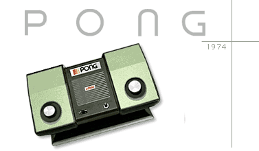

Assignment 4: pong
The Problem
pdf file
plain text
Helpful Explanations
(read these!)
Explanation of bouncing
Information on sigaction
Some Questions and Answers
Guidelines for writing re-entrant code

Advanced Topics
bounce for X-Windows
Hello World for X-Windows
Adjustable curses windows
Object Design for MultiBall
Games in Computing History
A Video Game led to Unix
Jobs and Wozniak worked on breakout before Apple
LucasFilms Games and Unix
Pong on an office building